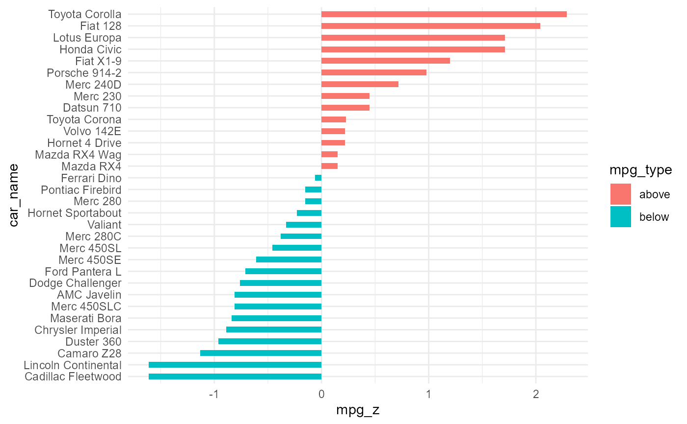

Diverging Bars is a bar chart that can handle both negative and positive
values. This can be implemented by a smart tweak with geom_bar(). But the
usage of geom_bar() can be quite confusing. That's because, it can be used to
make a bar chart as well as a histogram. Let me explain.
By default, geom_bar() has the stat set to count. That means, when you
provide just a continuous X variable (and no Y variable), it tries to make
a histogram out of the data.
In order to make a bar chart create bars instead of histogram,
you need to do two things. Set stat = identity and provide both x and y
inside aes() where, x is either character or factor and y is numeric.
In order to make sure you get diverging bars instead of just bars, make sure,
your categorical variable has 2 categories that changes values at a certain
threshold of the continuous variable. In below example, the mpg from mtcars
data set is normalized by computing the z score. Those vehicles with mpg
above zero are marked green and those below are marked red.
Usage
diverging_bar_plt(
.data,
.x_axis,
.y_axis,
.fill_col,
.plot_title = NULL,
.plot_subtitle = NULL,
.plot_caption = NULL,
.interactive = FALSE
)Arguments
- .data
The data to pass to the function, must be a tibble/data.frame.
- .x_axis
The data that is passed to the x-axis.
- .y_axis
The data that is passed to the y-axis. This will also equal the parameter
label- .fill_col
The column that will be used to fill the color of the bars.
- .plot_title
Default is NULL
- .plot_subtitle
Default is NULL
- .plot_caption
Default is NULL
- .interactive
Default is FALSE. TRUE returns a plotly plot
See also
Other Plotting Functions:
diverging_lollipop_plt(),
gartner_magic_chart_plt(),
los_ra_index_plt(),
ts_alos_plt(),
ts_median_excess_plt(),
ts_plt(),
ts_readmit_rate_plt()
Examples
suppressPackageStartupMessages(library(ggplot2))
data("mtcars")
mtcars$car_name <- rownames(mtcars)
mtcars$mpg_z <- round((mtcars$mpg - mean(mtcars$mpg))/sd(mtcars$mpg), 2)
mtcars$mpg_type <- ifelse(mtcars$mpg_z < 0, "below", "above")
mtcars <- mtcars[order(mtcars$mpg_z), ] # sort
mtcars$car_name <- factor(mtcars$car_name, levels = mtcars$car_name)
diverging_bar_plt(
.data = mtcars
, .x_axis = car_name
, .y_axis = mpg_z
, .fill_col = mpg_type
, .interactive = FALSE
)
